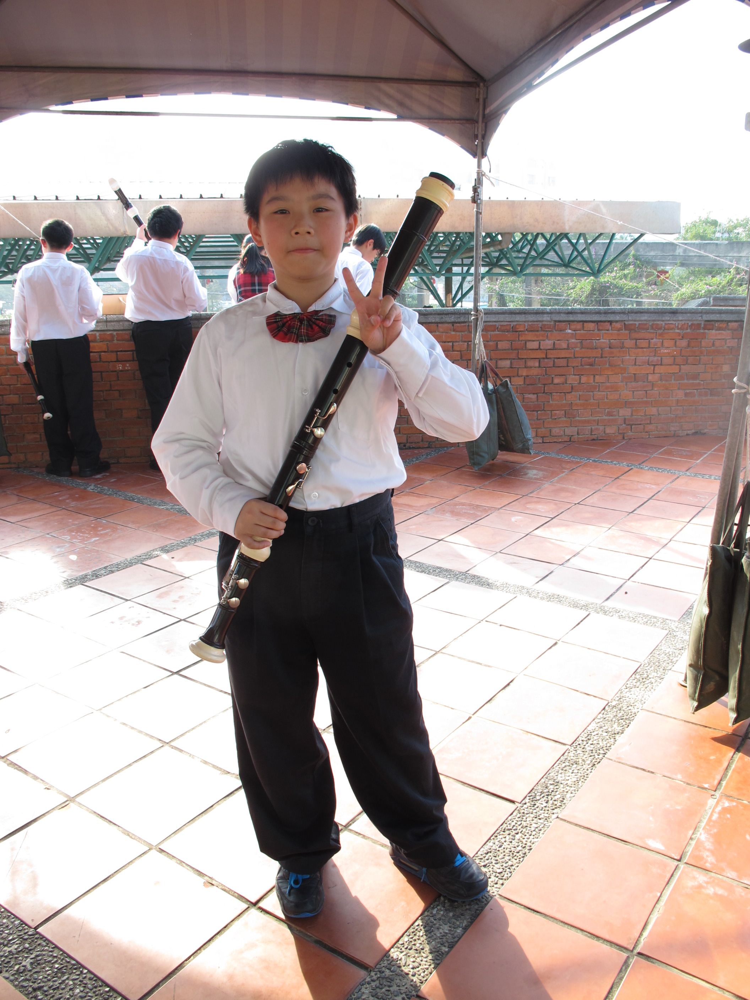
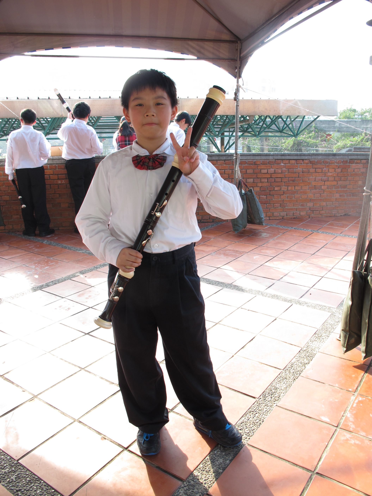

國小在直笛團時的照片

高二比全國賽時的照片

高三比全國賽時的照片

主頁
我們家從我小時候就讓我學鋼琴，也因此讓我對於音樂產生了不小的興趣
在國小的時候曾經參加過直笛團，並且也有代表學校出去比賽
在國中因為時間不便而沒有參加到的管樂團，在高中時也因為有時間而加入了管樂的家庭
並且在高二及高三這兩年，都代表學校的管樂團比賽並且成功晉級全國賽
國小在直笛團時的照片

高二比全國賽時的照片
高三比全國賽時的照片
主頁